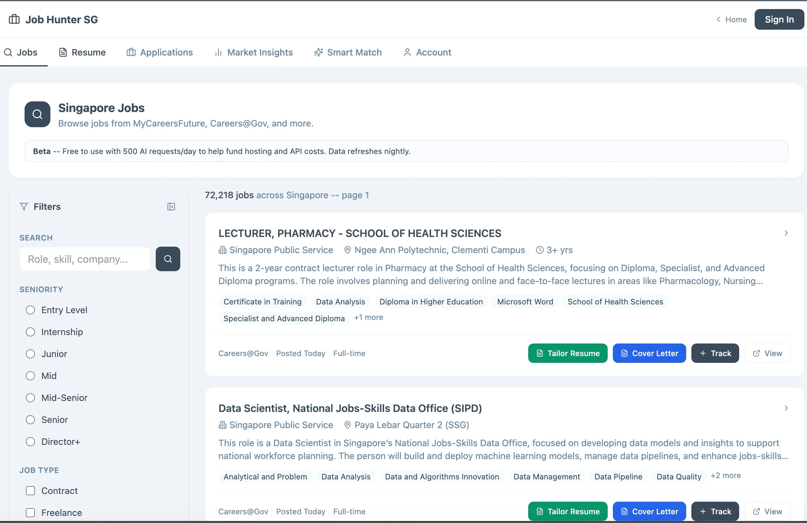
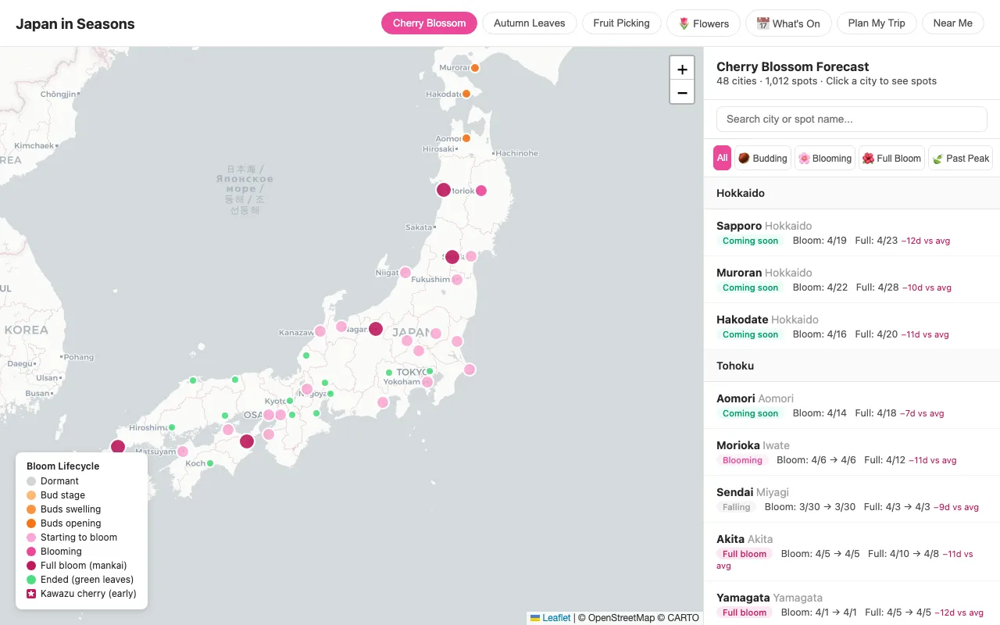
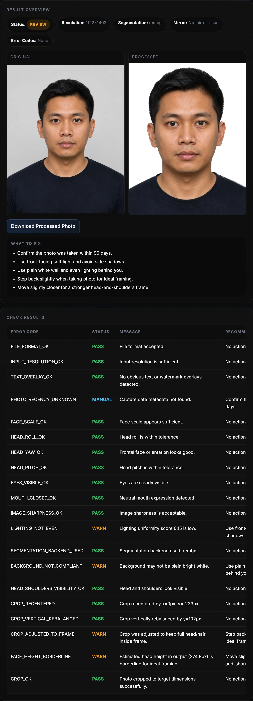

LLM systems
RAG, LangGraph, LangChain, MCP, tool-calling agents, SEA-LION, prompt management, human-in-the-loop workflows.
Making AI systems you can rely on.
7 years at Micron building production systems for semiconductor operations, now at AI Singapore (AIAP) building a 100E industry AI solution.

A clear problem statement, a design that survives scale, a working baseline, rigorous evaluation, and a deployment that keeps running after launch.
The work spans the parts recruiters now screen for: LLM systems, retrieval, agents, evals, observability, ML models, APIs, data pipelines, and shipped user interfaces.
RAG, LangGraph, LangChain, MCP, tool-calling agents, SEA-LION, prompt management, human-in-the-loop workflows.
Evaluation harnesses, Langfuse, Arize Phoenix, MLflow, trace review, failure analysis, source grounding.
LightGBM, scikit-learn, PyTorch, TensorFlow, YOLOv8, OpenCV, MediaPipe, SHAP, feature engineering.
FastAPI, React, TypeScript, Dash, SQLAlchemy, PostgreSQL, SQLite, auth, rate limits, background jobs.
Docker, Railway, GitHub Actions, Playwright, APScheduler, GCP, AWS, Snowflake, Airflow, Kedro.
Workflow automation, semantic search, text-to-SQL patterns, root-cause investigation, stakeholder reviews, cross-site rollout.

Searches Singapore roles, compares them with a resume, and produces guarded edits without inventing experience.

Turns seasonal forecasts into a searchable map, public API, and MCP server that assistants can query through 17 read-only tools.

Combines live Singapore weather feeds, radar, saved locations, and a temporally validated rainfall model in one operational view.

Evidence-first market research with source freshness, chart analysis, paper-trade records, and Telegram alerts.


Map-first Singapore benefit explorer with official source hashes, scheduled refreshes, and stale-source alerts.

Checks passport and ID photos with face landmarks, segmentation, crop guidance, and country rules.

Triages CSV and Parquet datasets through schema checks, EDA, baseline models, and validation metrics.

Compares Singapore wine offers using normalized bundle prices, identity matching, confidence checks, and deal scores.
Led AI-enabled transformation across four fabs (Singapore, Boise, Hiroshima, Taichung), with a team of 6 direct and up to 9 indirect engineers and a $9M portfolio. Co-led low-power DRAM and HBM yield programs, described here without customer or internal programme details. Built ML risk-scoring that lifted yield 1–2% at production scale, a GenAI SOP workflow scaled to ~3,000 engineers, and a digital twin that cut chemical use 60%. ResNet-50 wafer-defect classifier (Innovation Award). Work identified $600M+ in opportunities, with $50M+ realized.
Industry AI solution through the AIAP 100E programme, powered by SEA-LION and production ML patterns. Agents, vision, sequence modelling, RAG, evals, MLOps.
I keep side projects practical: real URLs, real data where possible, validation gates, and clear boundaries when something is demo or research-only.
From 73,857 Long COVID Records to One Plausible Treatment Lane
An auditable PubMed pipeline, six randomized rehabilitation trials, and a careful explanation of what REGAIN actually supports.
Read ›A Visual Guide to Simulating a TSV from Etch to Polish
Building a TSV process simulation with ViennaPS: process handoffs, tunable inputs, failure modes, measurements, and model limits.
Read ›I Am Now a Claude Certified Architect. Here's What I Wish I Knew First.
What the Anthropic certification family covers, why I chose this track, what to prepare, and the paced game plan that got me there.
Read ›Singapore-based, available from October 2026 for applied AI, agent workflow, and LLM product engineering roles.
haomingkoo@gmail.com